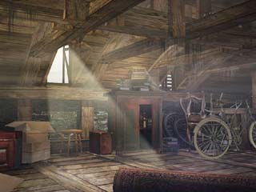
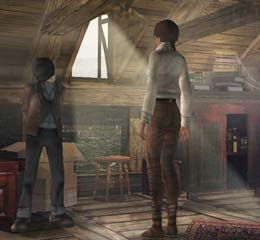

| 概要 | 地図 | |
| 淡いヒント集 | ヒント集 | 的確なヒント集 |
| 攻略最短ルート | Syberia 攻略へ |
| << 前の段階へ | 地域選択へ | 次の段階へ >> |
バラディレーン
庭園付近と森や洞窟
工場には、巨大な庭園がある。また、庭園の近くには大きな建物(アンナ達の家であることがSyberia IIで判明)もある。ここでやるべきことは、 ・屋上へ侵入 ・屋上で日記などの重要アイテムの入手 ・モモにマンモスの絵を渡す ・ダムを開け、洞窟へ行く ・洞窟の中にある重要なアイテムの入手 である。
庭園の鍵
 ・この鍵は、カラクリを動かすものである。試していないカラクリが近くにあるはずだ。
屋根裏
 ・薄暗い屋根裏部屋はちゃんと調べなくてはいけない。 ・日記などはどこにあるだろうか。 ・それらは、一カ所に固まって置いてある。
屋根裏の暗がり
 ・屋根裏の暗がりには、重要なものが隠されているかもしれない。 ・よく調べてみよう。この暗さを改善できるかもしれない。
モモの要求
 ・マンモスの絵はどこにあるだろうか。 ・屋根裏をよく調べてみよう。まだ見ていない部分があるはずだ。
町のはずれの扉
・モモが扉を開けてくれる。 ・この奥には森が広がり、ダムや洞窟がある。 ・とりあえず、モモに着いていくべきだ。
ダム
 ・ダムを開けば、水位が下がり洞窟へ行くことができる。 ・ケイトではダムを開くことができない。モモならばできるだろう。 ・ダムの棒が折れてしまっら、代替品を探す必要がある。近くに丈夫な木の棒があっただろうか。 ・たとえ折れてしまった木の棒でも、拾っておこう。かならず何かに使えるはずだ。 ・水位が下がったら、洞窟の調査に行かなくてはならない。 |
| << 前の段階へ | 地域選択へ | 次の段階へ >> |
| 概要 | 地図 | |
| 淡いヒント集 | ヒント集 | 的確なヒント集 |
| 攻略最短ルート | Syberia 攻略へ |
Syberia
| 目次へ戻る | ページの上部へ |